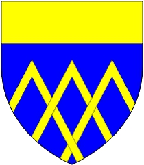

96142661 Lady Sarah FitzHugh
Lady of Badenoch. Blev ca 49 år.

Far:
Mor:
Född:
omkring 1160 Altyre, Moray, Scotland.
Död:
före 1210 Badenoch, Inverness, Scotland.
Barn:
Personhistoria
1160?
Födelse omkring 1160 Altyre, Moray, Scotland
<1210
Död före 1210 Badenoch, Inverness, Scotland